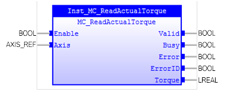

MC_ReadActualTorque
Gets the actual torque of the specified axis.

Description:
When ‘Enable’ changes to TRUE and ‘Axis’ has valid value,
the actual torque of the specified axis is given as ‘Torque’ output and ‘Valid’
output becomes TRUE.
This Function Block does not affect the PLCopen state
machine. It can work in any state.
Make sure the input and output parameters are of data type
indicated in the table below.
Inputs/Outputs:
|
Name
|
Data Type
|
Description
|
|
INPUTS
|
|
Enable
|
BOOL
|
Gets the actual torque of the axis
continuously while TRUE
|
|
Axis
|
AXIS_REF
|
Reference to the axis
|
|
OUTPUTS
|
|
Valid
|
BOOL
|
A
valid ‘Torque’ output is available
|
|
Busy
|
BOOL
|
The
FB is not finished and a new output value is to be expected.
|
|
Error
|
BOOL
|
Signals
that an error has occurred within the FB.
|
|
ErrorID
|
UINT
|
Error
identification
|
|
Torque
|
LREAL
|
The
value of the actual torque
|
Examples:
Example 1:
|
 Example
Example
|
|
(*Example for
MC_ReadActualTorque *)
inst_ReadActualTorque ( Enable:=bEnable,
Axis:=Axis0Ref);
bValid:= inst_ReadActualTorque.Valid;
bBusy := inst_ReadActualTorque.Busy;
bError := inst_ReadActualTorque.Error;
ErrorId := inst_ReadActualTorque.ErrorID;
IF
bValid
THEN
lrTorque := inst_ReadActualTorque.Torque;
END_IF
;
|
See also: